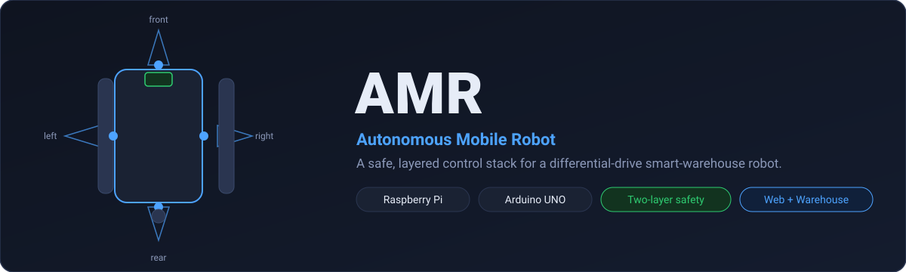
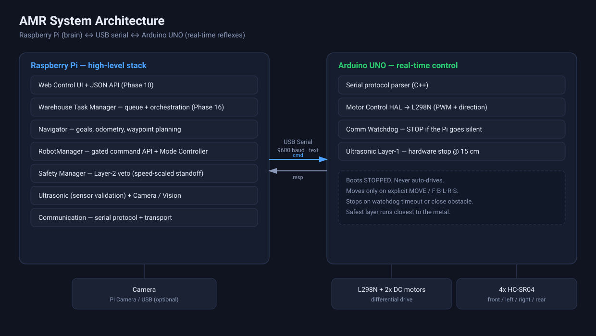
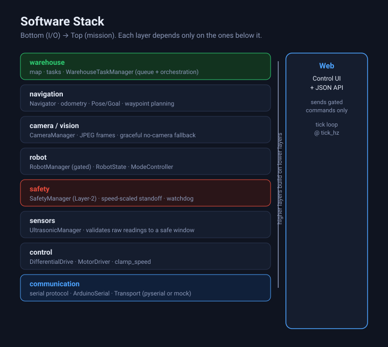
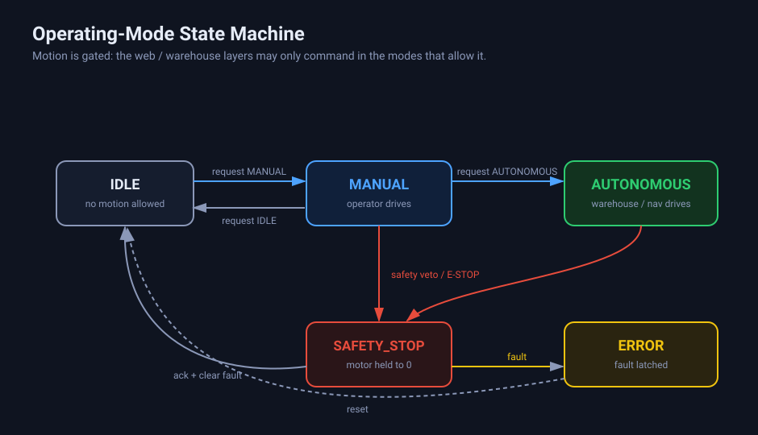
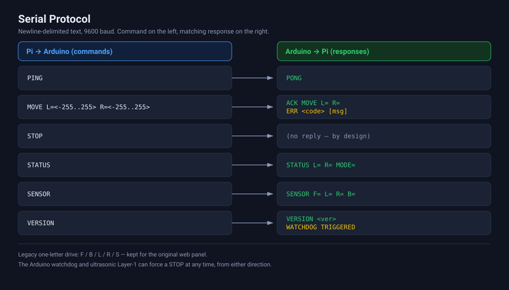
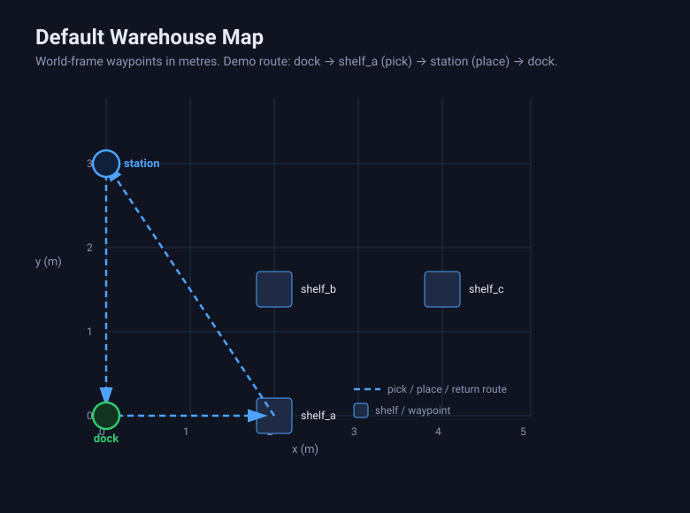

AMR — Autonomous Mobile Robot
A safe, layered control stack for a differential-drive smart-warehouse robot
A Raspberry Pi is the brain (web control, navigation, warehouse tasks); an Arduino UNO is the reflex system (real-time drive, watchdog, hardware proximity stop). Every command flows through one gated API, so the robot cannot move when safety says no.
1Architecture
The Pi runs everything that can be slow or buggy; the Arduino runs the small safety-critical loop. The Arduino boots stopped, moves only on explicit commands, and can force a stop itself — a Pi crash or pulled cable can never leave it driving.

2Software stack

3Operating modes

4Serial protocol
Newline-delimited text at 9600 baud. STOP intentionally returns nothing; the
watchdog and Layer-1 proximity stop can fire from either side.

5Warehouse map

6Verified status
Every claim is tied to a hardware-free run. Safety thresholds are
NOT_VERIFIED test values; geometry is null until measured.
| Claim | Value | Reproduce |
|---|---|---|
| Test suite | 276 passed · 2 skipped | pytest -q |
| Python matrix | 3.10 / 3.11 / 3.12 | ci.yml |
| Safety thresholds | test values | safety.yaml |
| Geometry | not measured | robot.yaml |
Raspberry PiArduino UNO L298N diff-drive4x HC-SR04 Web + JSON APIWarehouse tasks